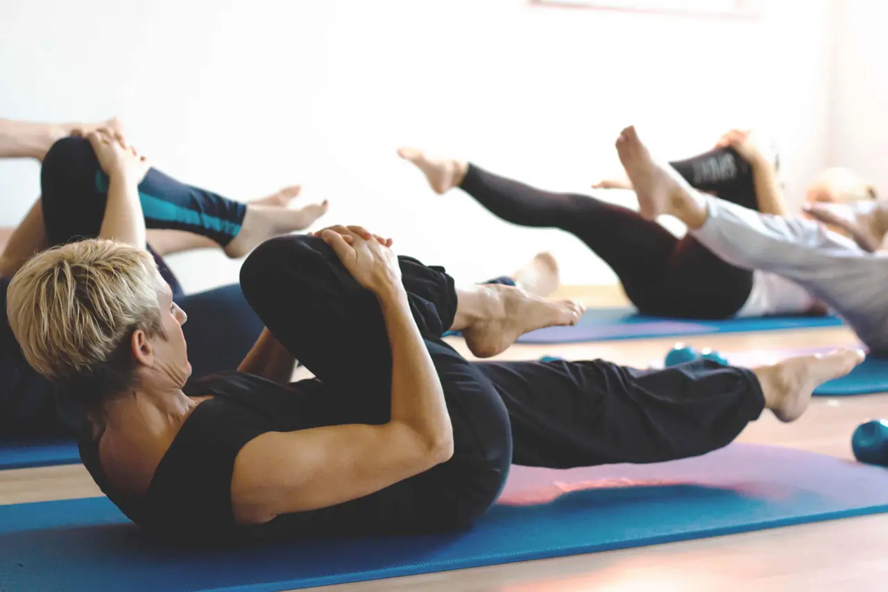
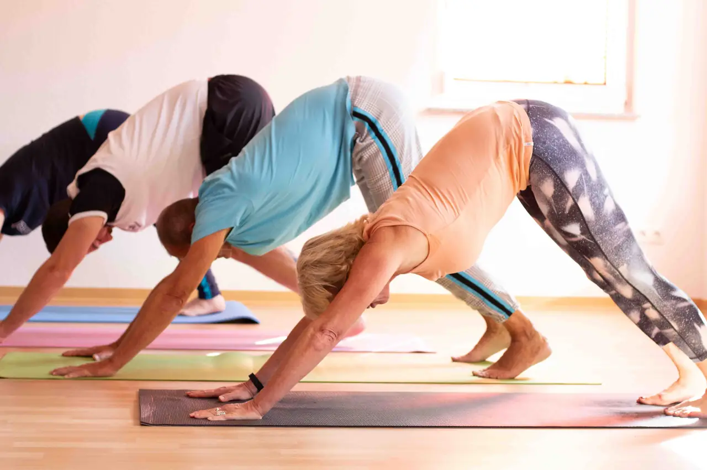
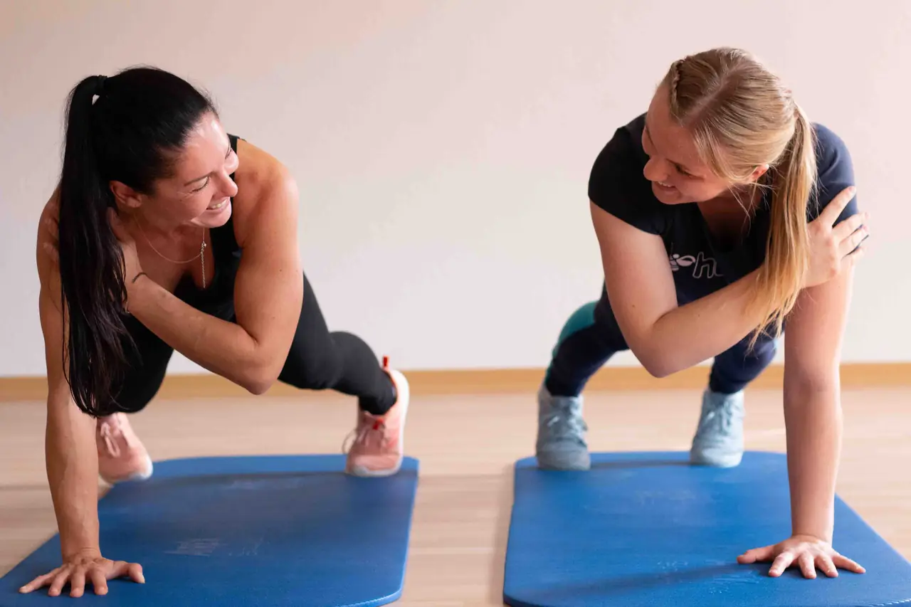

Kurs & Training
Kurse und Gerätetraining in Ispringen
Die Therapie ist vorbei – und jetzt? Mit Gesundheits-PLUS trainieren Sie in kleinen Gruppen unter Anleitung von Therapeutinnen und Trainerinnen weiter: für Kraft, Ausdauer, Beweglichkeit und Gleichgewicht.
Bezahlung: Kursgebühr oder Einzeltermin. Preise und mögliche Krankenkassen-Zuschüsse ergänzen
-
 Gerätefit
Hier kommt keiner mehr aus der Puste
Kraft- und Ausdauertraining an Technogym-Geräten unter Anleitung – auch nach Gelenkersatz.
Gerätefit
Hier kommt keiner mehr aus der Puste
Kraft- und Ausdauertraining an Technogym-Geräten unter Anleitung – auch nach Gelenkersatz.
-
 Gerätezirkel
Station für Station fit
Zirkeltraining an den Kinesis-Stationen in der Gruppe – ideal für Einsteiger.
Gerätezirkel
Station für Station fit
Zirkeltraining an den Kinesis-Stationen in der Gruppe – ideal für Einsteiger.
-
 Technogym Kinesis Stationen
Natürlich bewegen – an Geräten
Training mit Seilzügen an den Technogym-Kinesis-Stationen – für jedes Fitnesslevel.
Technogym Kinesis Stationen
Natürlich bewegen – an Geräten
Training mit Seilzügen an den Technogym-Kinesis-Stationen – für jedes Fitnesslevel.
-
 TRX-Training
Muskelkater in einer neuen Dimension
Ganzkörpertraining mit TRX-Schlingentrainer und eigenem Körpergewicht.
TRX-Training
Muskelkater in einer neuen Dimension
Ganzkörpertraining mit TRX-Schlingentrainer und eigenem Körpergewicht.
-
 Functional Training
Holen Sie das Beste aus sich heraus
Dreidimensionales Ganzkörpertraining mit Kettlebell, TRX und Tubes.
Functional Training
Holen Sie das Beste aus sich heraus
Dreidimensionales Ganzkörpertraining mit Kettlebell, TRX und Tubes.
-

Pilates Aus der Mitte entspringt die Kraft Pilates-Kurs für Einsteiger und Geübte: Bauch, Rücken und Beckenboden. -

Yoga Im Einklang mit sich Yoga-Kurs mit fließenden Bewegungsabfolgen – mit Axana Bosch und Nicole Bauer. -
 Ladies Power
Let’s go, girls!
Workout für Frauen zu Musik – mit Bosu, Kettlebell und Tubes.
Ladies Power
Let’s go, girls!
Workout für Frauen zu Musik – mit Bosu, Kettlebell und Tubes.
-
 Seniorenfit
Wer rastet, der rostet
Ganzkörpertraining für Seniorinnen und Senioren: Kraft, Gleichgewicht, Beweglichkeit.
Seniorenfit
Wer rastet, der rostet
Ganzkörpertraining für Seniorinnen und Senioren: Kraft, Gleichgewicht, Beweglichkeit.
-
 Rückenfit
Ein starker Rücken macht das Leben leichter
Rückenkurs: Rumpf und Beine kräftigen, Haltung schulen, Stürzen vorbeugen.
Rückenfit
Ein starker Rücken macht das Leben leichter
Rückenkurs: Rumpf und Beine kräftigen, Haltung schulen, Stürzen vorbeugen.
-

Personal Training Richtig fit, ohne Ausreden Personal Training mit Axana Bosch: Mobilität, Muskelaufbau, Gewichtsreduktion.
Freies Training
Mit Ihrem Trainingsplan trainieren Sie zu diesen Zeiten selbstständig an den Geräten:
| Montag | 08:00 – 09:00 und 18:30 – 19:30 |
|---|---|
| Dienstag | 11:15 – 12:15 und 18:30 – 20:30 |
| Mittwoch | 08:00 – 09:00 und 19:00 – 20:00 |
| Donnerstag | 09:00 – 10:00 und 16:15 – 17:15 |
| Freitag | 08:00 – 09:00 oder 14:30? |